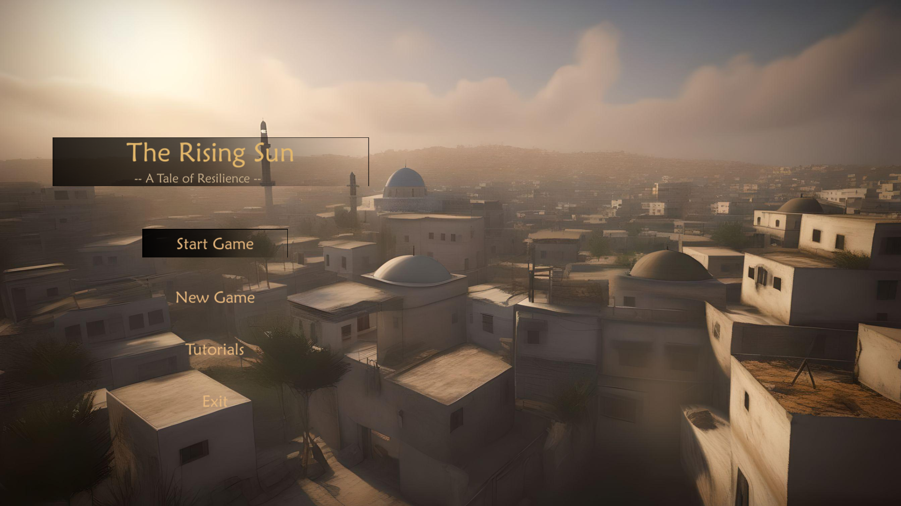
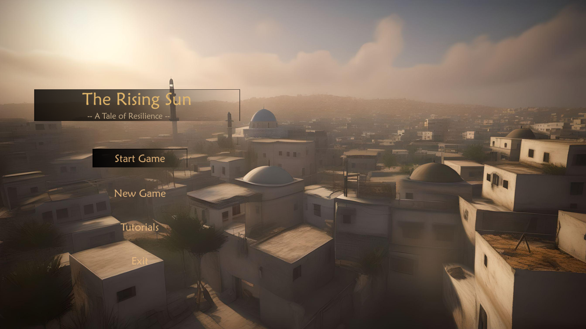
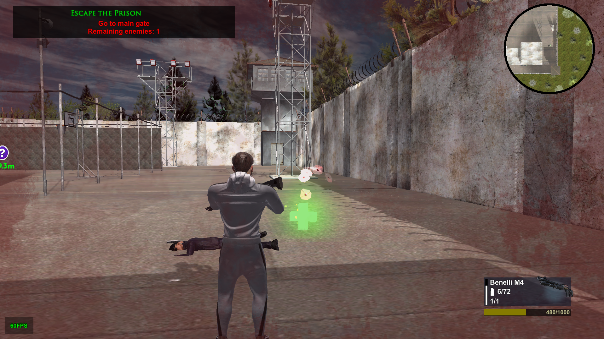
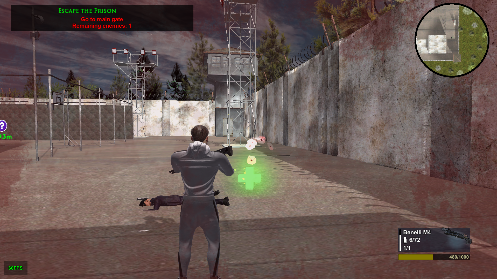

RisingSun: The Land of Resilience
Download game 

 

Description
The game “Rising Sun: The land of Resilience” is a 3D Action-RPG game, depicting the journey of a young Palestinian boy, as he navigates through the Palestine-Israel conflict. The players will live the virtual life of Ahmed and experience the life of a Palestinian child and his hardships. The main reason for this is to enable players to know the real struggles of the Palestinians and their losses. The gameplay revolves around Ahmed who in his childhood loses his family as Israeli forces forcefully attack Palestine. The game consists of various chapters, each presenting unique challenges and opportunities for the players to engage in Ahmed’s journey. The players will gain insight into the human side of the Palestinian-Israeli conflict. Rising Sun represents more than just a game, it is a powerful tool for education. We aim to spark conversation, challenge perceptions, and inspire positivity in the young generation to stand up against oppression and face hardships with a high head. Some events in the past made us think of a way to let the gaming community know about Israeli oppression and cruelty. We hope that this game does some good for the community and especially for the Palestinians!
Features
- Eagle Vision: Strategically explore and plan your moves.
- Dynamic GamePlay: Face challenging missions.
- Immersive 3D World:Navigate beautifully crafted environment.
Technologies Used
- Unity
- C#
- 3D Modeling